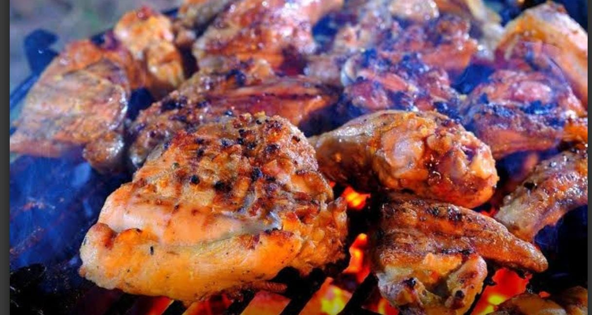
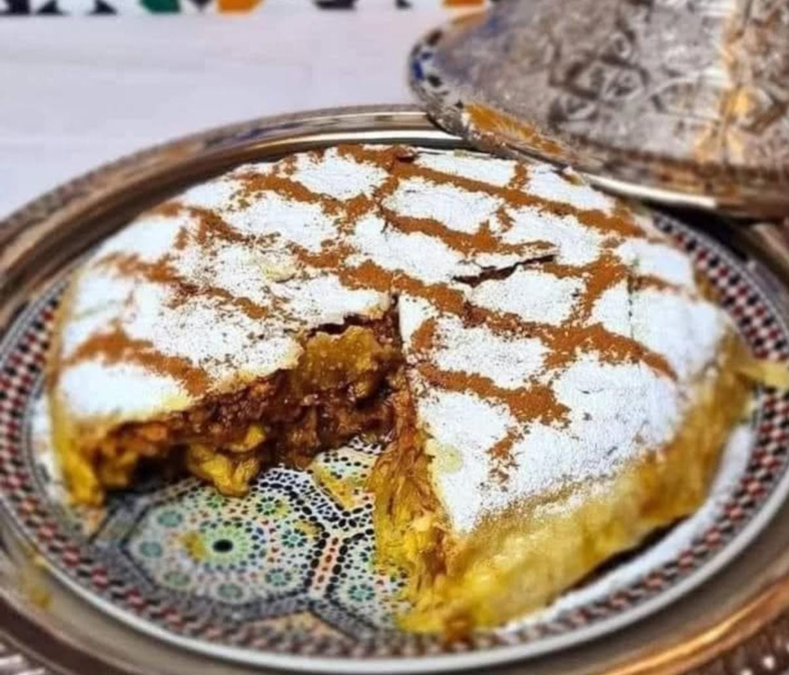
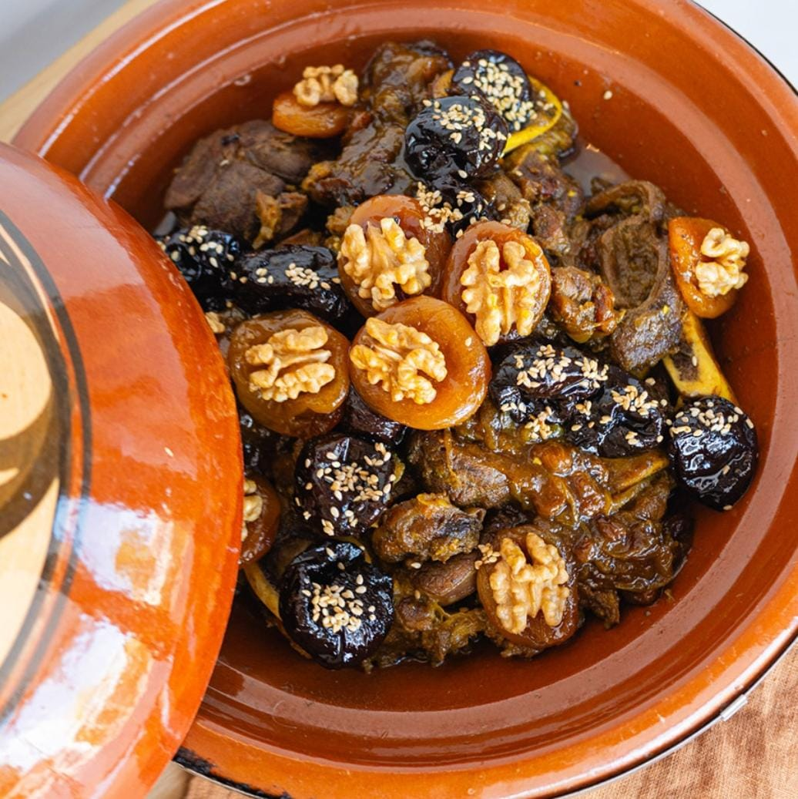
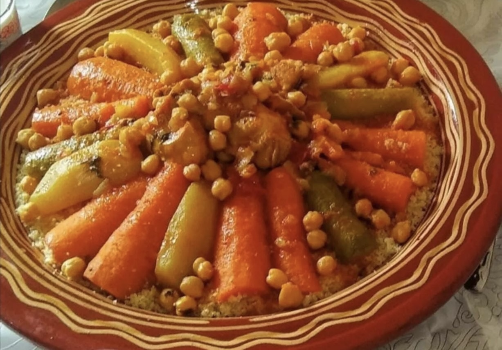

Bienvenido a Casa Sidi
Descubre una experiencia culinaria única con los mejores platos marroquíes, preparados con pasión y tradición.
Nuestras especialidades
- Pollo a la brasa
- Pastela de pollo o pescado
- Tajín de carne con ciruelas
- Cuscús marroquí
- Pincho moruno

- Té moruno con dulce árabe

El equipo
Foto del equipo
Un equipo apasionado por la gastronomía marroquí y la hospitalidad.